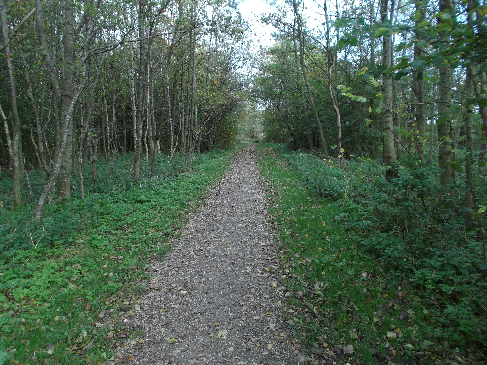
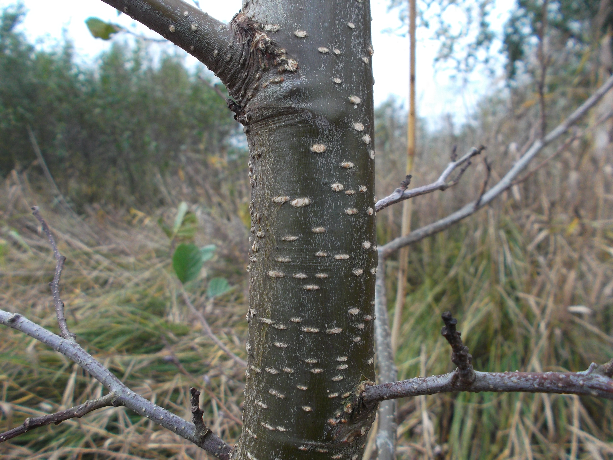
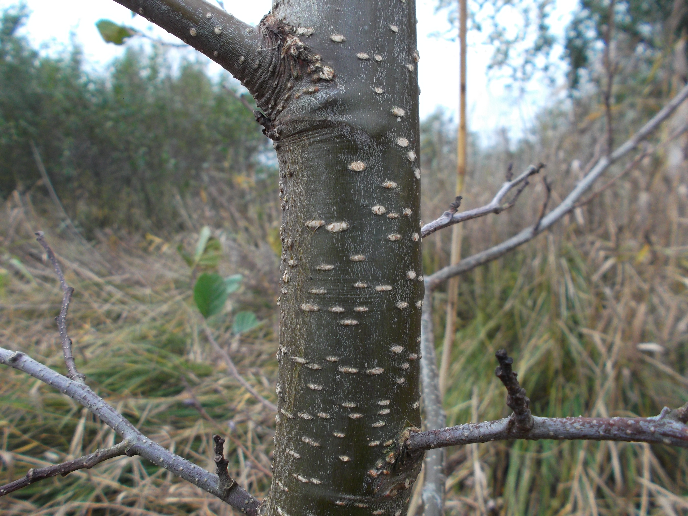

The fascinating texture of the Bark of Trees
I find the bark of trees fascinating. They look so different, and yet so similar. As I was walking through a patch of greenery I managed to get quite some sharp shots that really nicely show the ruggedness and roughness of the tree bark. This outer layer of trees is essential, since it protects the delicate tree sap channels inside from the harsh weather outside. Here are the pictures. Enjoy!
 


Finally, I came past this little guy: A snail!